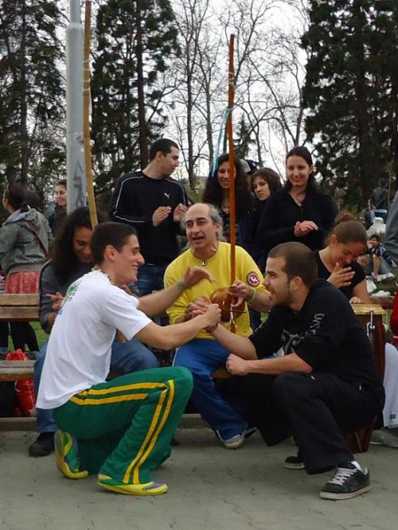
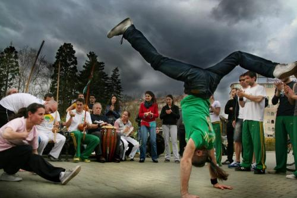
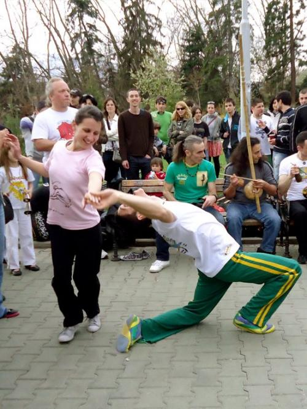
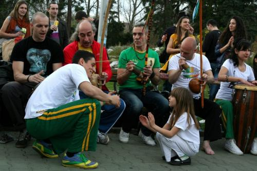
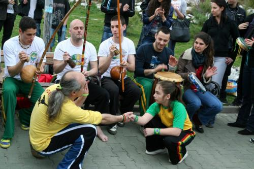
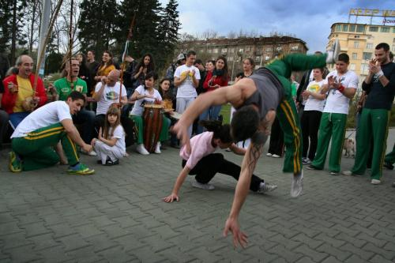
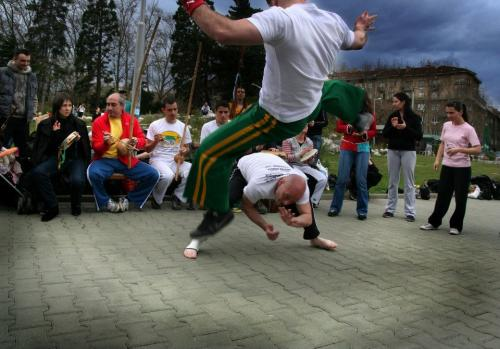

Ура! Ура! Сезон открыт :)
Сбылась мечта идиота! Моя первая открытая рода в Болгарии, да еще и на чистом воздухе. Рода эта состоялась в столице г. София куда приехали капоэйристы из разных городов и в итоге получилось вполне приличное мероприятия.Все как полагается… 
достойная игра

немного самбы

и что очень приятно юные капоэйристы
 и кстати этот юноша,насколько я поняла занимался в Москве в C. D. O, апелиду ‘Parafuso’ зовут Костя, в каком точно году не скажу, но вроде 2-3 года назад…
А вот замечательное фото
 Приемственость поколений, так как этот человек с сединой собственно тот кто привез капоэйру в замечательную страну Болгарию. Подробностей этой дивной истории я пока не знаю, но за сам факт большое ему спасибо. А юный капоэйрист, один из его учеников, при чем очень многообещающий юноша.
Атмосфера была дивная, мир-дружба-жвачка, игра может быть и не самая техничная и изысканная, но как я писала ранее, играют искренне, с азартом, блеском в глазах и улыбкой. А несколько человек были на вполне достойном уровне  
Ну в общем как-то так… Ответ на вопрос есть ли жизнь на марсе капоэйра в Болгарии оказался положительным:) Теперь с нетерпением жду следующего мероприятия, и вам кстати тоже желаю скорейшего наступления весны и открытия сезона!